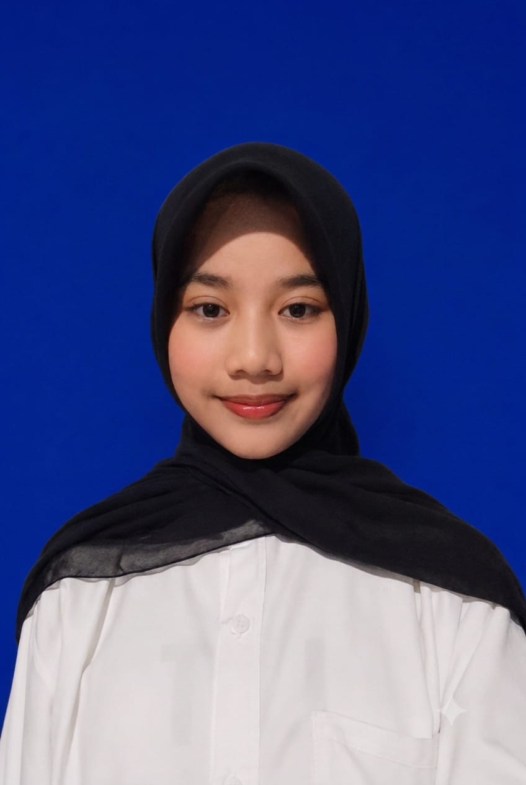

Website • Redesign
Redesain Website Access Media
Konsep ulang tampilan website dengan gaya modern dan navigasi jelas.
Tanya proyek ↗Saya pelajar Rekayasa Perangkat Lunak yang suka belajar membuat website, mencoba hal baru, dan mengubah ide sederhana menjadi karya digital yang menarik.

"Saya adalah pelajar jurusan Rekayasa Perangkat Lunak (RPL) di SMK Negeri Manonjaya. Saya tertarik pada dunia teknologi, pengembangan website, dan desain digital."
Saya senang mengeksplorasi ide, belajar dari proses, dan mengembangkan kemampuan melalui tugas sekolah maupun proyek pribadi dengan penuh tanggung jawab.
Membuat struktur halaman web & tampilan responsif.
Logika pemrograman backend dan pemrosesan data.
Penyimpanan dan manajemen database terstruktur.
Penyusunan materi presentasi & profil visual.
Kolaborasi dan komunikasi yang baik dalam proyek.
Mencari ide segar dan solusi dalam perancangan.
Konsep ulang tampilan website dengan gaya modern dan navigasi jelas.
Tanya proyek ↗
Mengelola data pelanggan, paket laundry, transaksi, dan laporan.
Tanya proyek ↗
Menyusun materi profil perusahaan dalam presentasi ringkas.
Tanya proyek ↗Mempelajari dasar pemrograman, pembuatan website, dan pengelolaan database.
Mendapatkan pengalaman langsung di dunia kerja, meningkatkan disiplin, komunikasi, serta membuat desain profil perusahaan menggunakan Canva.
Punya ide atau ingin ngobrol seputar proyek? Yuk terhubung lewat WhatsApp!
💬 Hubungi Saya di WhatsApp ↗